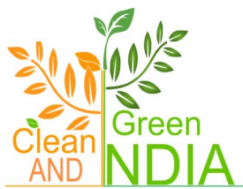
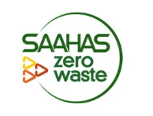

Supported by Initiatives



WasteConnect bridges the gap between collectors, manufacturers, and citizens to create a sustainable waste management system.
Every year, millions of tons of waste are produced worldwide. Without proper disposal, this waste harms the environment, pollutes water and soil, and threatens human health. WasteConnect provides a digital platform to make recycling, reusing, and safe disposal more efficient and impactful.
Plastic Recycled
Paper Recycled
E-Waste Devices Processed

